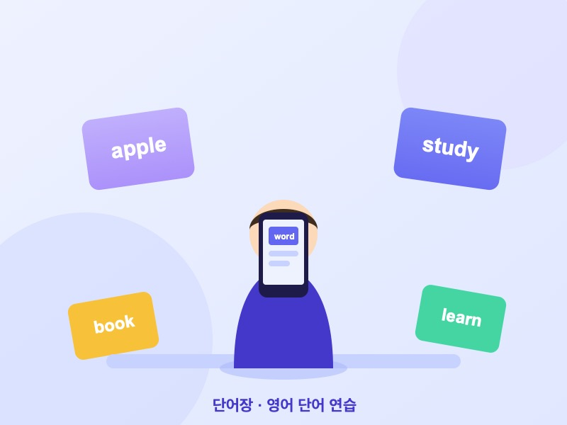

서비스 정보
나만의 영어 단어장
나에게 필요한 단어만 골라 담고, 반복 학습으로 오래 기억합니다.
- 빠른 암기 — 간격 반복 학습으로 짧은 시간에 효율적으로 외웁니다.
- 맞춤형 단어장 — 관심 분야와 수준에 맞는 단어만 골라 학습합니다.
- 학습 기록 관리 — 외운 단어와 복습 일정을 한눈에 확인합니다.

이용 방법
- 학습할 단어를 검색하거나 목록에서 추가합니다.
- 예문과 발음을 들으며 단어를 학습합니다.
- 퀴즈로 복습하고 암기 상태를 확인합니다.
자주 묻는 질문
Q. 무료로 이용할 수 있나요?
A. 네, 기본 단어장 기능은 무료로 제공됩니다.
Q. 하루에 몇 개의 단어를 학습하나요?
A. 기본 목표는 하루 5개이며, 알림 설정에서 자유롭게 바꿀 수 있습니다.
학습 환경 설정
화면 테마
0 / 10
안내를 확인하면 학습을 시작할 수 있습니다.
단어 학습 시작
1 / 3 · 단어장 정보
단어장 정보
하루 학습량
하루 10개 이상이면 복습할 단어도 함께 늘어납니다. 알림 설정을 켜 두세요.
학습 내용 확인
학습을 시작했습니다
오늘의 단어장이 만들어졌습니다. 알림 시간에 맞춰 복습해 보세요.
내 단어장 목록
아직 만든 단어장이 없습니다. 학습을 시작하면 여기에 추가됩니다.
단어장 상세
알림 설정
매일 5개 단어 학습 알림을 저장해 주세요.
소식 받기
매일 추천 단어와 학습 팁을 이메일로 받아보세요.